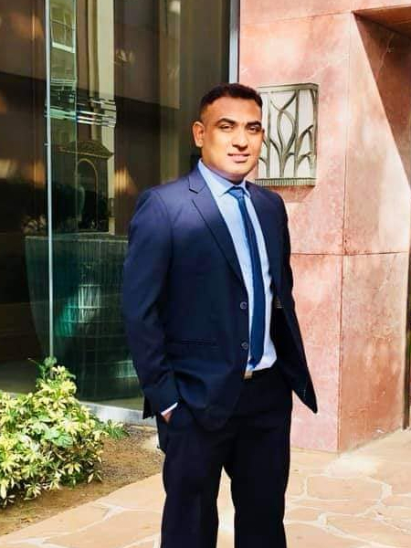

Mohammad Mahfujur Rahman
|  | Mohammad Mahfujur Rahman |
Biography
I am a researcher with the Speech, Audio, Image and Video Technologies (SAIVT) Group, School of Electrical Engineering and Computer Science, Queensland University of Technology (QUT), Brsbane, Australia.
I am working with Prof. Clinton Fookes and Prof. Sridha Sridharan as a Ph.D. researcher at the Speech, Audio, Image and Video Technologies (SAIVT) Laboratory, Brsbane, Australia. I am passionate about computer vision, deep learning, machine learning, robotics, and intelligent systems especially in visual recognition with limited or weakly labeled training data. I aim to utilize deep transfer learning and domain adaptation techniques to enable visual learning.
News
- One of my paper is accepted by Pattern Recognition (PR), 2019. Our work on Deep Domain Adaptation and Generalization, which provides a new analysis on unsupervised learning from the perspective of distribution mismatch among domains. [Code] [Paper].
- Code of Minimum Discrepancy Estimation (MDE) for Deep Domain Adaptatio can be found here [Code].
- Code of Multi-component Image Translation for Deep Domain Generalization can be found here [Code].
Preprints
| - |
Multi-component Image Translation for Deep Domain Generalization. |
Selected Publications
 |
Correlation-aware Adversarial Domain Adaptation and Generalization. |
 |
Multi-component Image Translation for Deep Domain Generalization. |
 |
On Minimum Discrepancy Estimation for Deep Domain Adaptation. |
Services
Workshop Organizers:
Co-organizer of CVPR 2020 Workshop on Visual Understanding by Learning from Web Data.
Co-organizer of ICCV 2019 Workshop on Transferring and Adapting Source Knowledge (TASK) in Computer Vision (CV).
Co-organizer of CVPR 2019 Workshop on Visual Understanding by Learning from Web Data.
Co-organizer of ECCV 2018 Workshop on Transferring and Adapting Source Knowledge (TASK) in Computer Vision (CV).
Co-organizer of CVPR 2018 Workshop on Visual Understanding by Learning from Web Data.
Co-organizer of ICCV 2017 Workshop on Transferring and Adapting Source Knowledge (TASK) in Computer Vision (CV).
Co-organizer of CVPR 2017 Workshop on Visual Understanding by Learning from Web Data.
Co-organizer of ECCV 2016 Workshop on Transferring and Adapting Source Knowledge (TASK) in Computer Vision (CV).
Co-organizer of ICDM 2015 Workshop on Practical Transfer Learning.
Conference Reviewer:
- CVPR2020, ICLR2020, ICML2020, AAAI2020, ICCV2019, CVPR2019, NIPS2019, ICML2019, BMVC2019, ACM-MM2018, ECCV2018, ICIP2018, CVPR2018, ACM-MM2017, ICIP2017, ICCV2017, CVPR2017, ECCV2016, ICIP2016, NIPS2015, IJCAI2015, ICIP2015, ICME2014, ICME2013, IJCAI2013, ACM-MM2013.
Journal Reviewer:
- IEEE Transactions on Pattern Analysis and Machine Intelligence (T-PAMI)
- International Journal of Computer Vision (IJCV)
- Journal of Machine Learning Research (JMLR)
- IEEE Transactions on Image Processing (T-IP)
- IEEE Transactions on Information Forensics & Security (T-IFS)
- IEEE Transactions on Neural Networks and Learning Systems (T-NNLS)
- IEEE Transactions on Circuits and Systems for Video Technology (T-CSVT)
- IEEE Transactions on Systems, Man, and Cybernetics: Part B (T-SMC-B)
- Computer Vision and Image Understanding (CVIU)
- ACM Transactions on Multimedia Computing, Communications and Applications (ACM TOMM)
- Pattern Recognition (PR)
- Pattern Recognition Letters (PRL)
- Machine Vision and Applications (MVAP)
- Signal Processing (SP)
Teaching
- Fall 2016: Computer Vision, ETH Zurich, Teaching Assistant
- Spring 2013: Engineering Mathematics, Nanyang Technological University, Teaching Assistant
- Fall 2012: Discrete Mathematics, Nanyang Technological University, Teaching Assistant
- Spring 2012: Data Structures, Nanyang Technological University, Teaching Assistant
- Fall 2008: Data Mining, Beijing Normal University, Teaching Assistant
- Spring 2008: Human Computer Interaction, School of Continuing Education, Beijing Normal University, Lecturer
- Fall 2007: Mathematical Logic, Beijing Normal University, Teaching Assistant
Awards
- CVPR 2019 Outstanding Reviewer
- CVPR 2019 WAD D2-City & BDD100K Detection Domain Adaptation Challenge Second Place
- ECCV 2016 Outstanding Reviewer
- CVPR 2014 Doctoral Consortium
- Nanyang Engineering Doctoral Scholarship 2010